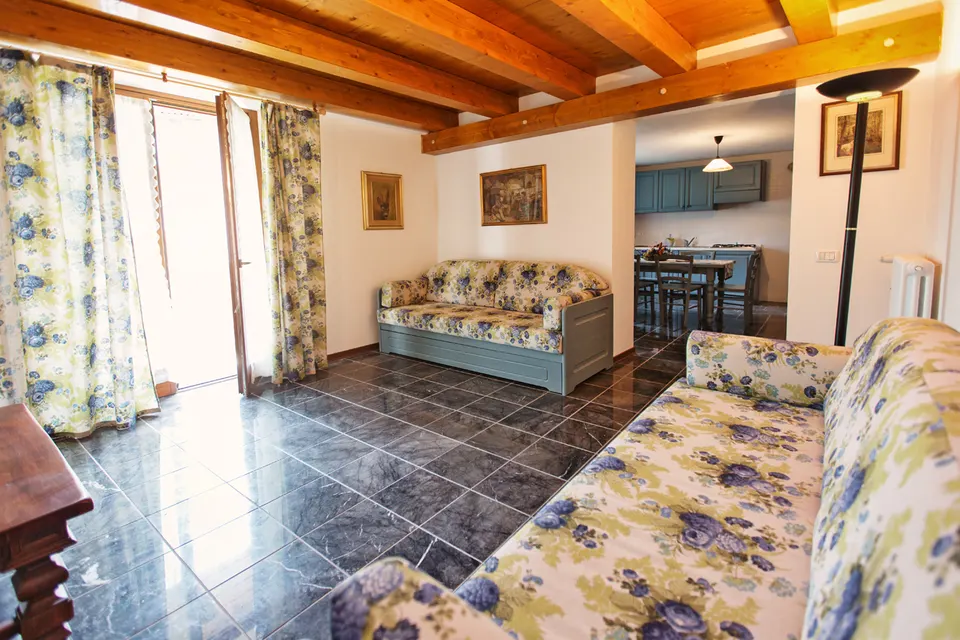

Casa Vanda Genziana
Two bedrooms and a large living room on the wooden terrace: a 4-star family apartment in Viaso.
Genziana has two bedrooms, a bathroom, a kitchen with dining table and a large living room with access to the wooden terrace. Blue and grey throughout the furnishings give it a warm, homely feel.
Villa Vanda, recognised by the Municipality of Socchieve as a building of historic value, dates from the second half of the 18th century: typical Carnic architecture, stone arches and wooden galleries (linde) that open onto a beautiful view. It stands in Viaso, a quiet, sunny hamlet surrounded by greenery, where life follows the slow rhythm of nature. Guests have a small courtyard with a garden and reserved parking spaces next to the entrance.
- TV
- Heating
- Parking space
- Shared garden
- Wi-Fi
- Pets allowed
6 photos of Casa Vanda Genziana
Viaso, a hamlet of Socchieve
Viaso sits where the trails linking the hamlets of the municipality meet, and it surprises with how well it stays hidden while being so close to Socchieve. The mountain-bike route runs through it and, with the La Baita restaurant, it is a safe harbour for lovers of food and wine tourism.
National identification code (CIN): IT030110A1F58PGPCB